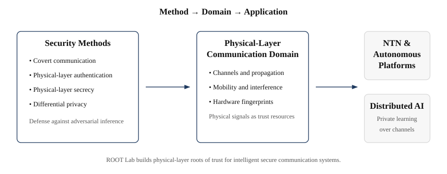

Research Scope
ROOT Lab develops physical-layer security, privacy, and trust methods for communication systems. Our work connects security methods such as covert communication, physical-layer authentication, physical-layer secrecy, and differential privacy with the physical-layer communication domain, where physical signals, channels, mobility, hardware characteristics, interference, and noise shape both vulnerability and trust.

Security and Privacy Methods
We study security and privacy methods according to what an adversary attempts to infer from physical signals.
- Did transmission occur? → Covert communication
- Who generated the signal? → Physical-layer authentication
- What was transmitted? → Physical-layer secrecy
- Was private data involved? → Differential privacy
Physical-Layer Communication Domain
Our domain is physical-layer communication. We study how channels, propagation environments, signal statistics, hardware fingerprints, mobility, interference, and noise can be used not only as impairments, but also as security resources. This perspective allows ROOT Lab to study physical-layer trust without being restricted to a single communication medium.
Application Systems
We apply physical-layer security and privacy methods to communication systems where trust must be established from signals, channels, and devices rather than from software-layer assumptions alone.
- NTN and autonomous platforms: We study physical-layer trust for UAVs, USVs, satellites, maritime networks, and mobile cyber-physical systems, where mobility, propagation, and hardware characteristics directly affect security.
- Communication-efficient distributed AI: We study privacy and security for wireless federated learning and over-the-air aggregation, where learning updates are transmitted over physical-layer channels and may reveal private data or device participation.